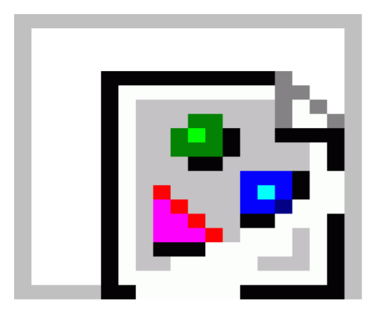
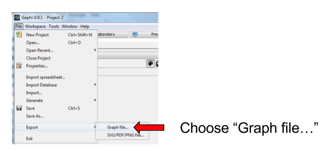
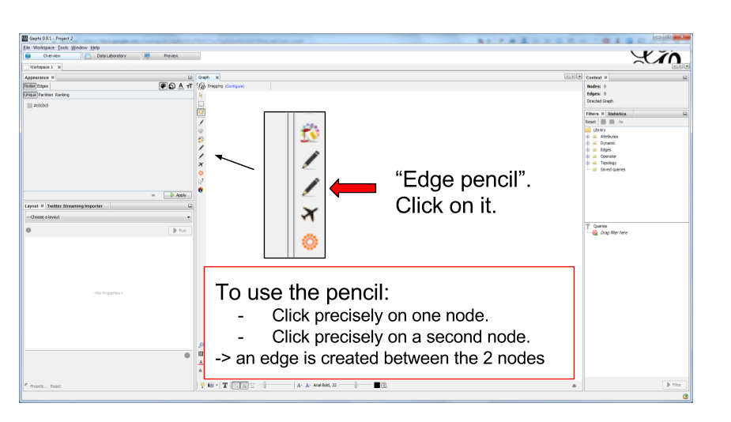

<graph mode="slice" defaultedgetype="directed" timerepresentation="timestamp" timestamp="1">Creating a simple dynamic network
last modified: 2017-02-19
'Escape' or 'o' to see all sides, F11 for full screen, 's' for speaker notes
Goals of this tutorial
We are going to create one very simple non dynamic network (network "A").
then we will create a modified version of it (network "B").
in both files, we need to modify a single line.
finally, we will merge networks A and B, forming a new dynamic network evolving from version A to B.
The creation of the 2 networks is not a mandatory step: you can use your own network files, as long as they are in gexf file format. In this case, skip to here. We create the networks in this tutorial to provide the most simple and clear case. |
open a new project in Gephi
open Gephi. On the Welcome screen that appears, click on
New Project

Figure 1. Open a new project
creating network "A"
Our project is empty. We can use a simple click-and-point tool to create a network:
Figure 2. Icon for node creation

Figure 3. A few nodes have been created
When you have created a couple of nodes, click again on the pencil icon to stop the node creation.
Export the network as a file and call it "network A":

Figure 4. Exporting the network

Figure 5. Choosing the gexf file format
Clicking on "Save" saves the file in the folder you chose. You are back to the view on your graph.
creating network "B"
Now, click on the "Edge pencil", just below the "Node pencil we have used (careful, the icons are identical!)
Figure 6. Choosing the gexf file format
Create one edge, or a couple of edges, in this way.
Clicking again on the pencil stops the edge creation by mouse clicks.
Then export the network in the same folder where we put the previous file (File → Export → Graph File …)
This time, name the file 'network B.gexf' and remember to choose the gexf file format just like we did before.
modifying just one line in the files network A.gexf and network B.gexf
From your computer, open network A.gexf with a text editor (don’t use Microsoft Word!):

Figure 7. The network file opened
Delete and replace this line by this one:
See timestamp="1" ? It means this will be the first "time slice" of your dynamic network.
Save the file.
Repeat the steps for network B.gexf:
open the file in a text editor,
find the line
<graph defaultedgetype="directed" mode="static">replace it by:
<graph mode="slice" defaultedgetype="directed" timerepresentation="timestamp" timestamp="2">(see that we have timestamp="2" here: this is going to be the second time slice!)
save the file.
merging network "A" and "B" into a dynamic network
We will use the 2 files network A.gexf and network B.gexf that we have created.
First, let’s close the project we have in Gephi, without saving:

Figure 8. Closing the current project
Then click on File → Open and navigate to the folder where network A.gexf and network B.gexf are located:

Figure 9. Opening files
Here, make sure you select the 2 files at once (using the key Ctrl on pc or {commandkey} on mac).

Figure 10. Opening 2 files at once
Opening the files display a report window:

Figure 11. Import report window
enabling the timeline
You should see this button, click on it (if not: something went wrong. Retrace your steps)

Figure 12. Enable the timeline
Click and slide the right side border of the timeline to the left. You should see the edge disappear:

Figure 13. Sliding the timeline
We created a dynamic network. It needs to be animated precisely with the timeline, dynamic attributes should be explored, as well as dynamic layouts.
These features will be explained in the coming tutorials on dynamic networks with Gephi.
more tutorials on dynamic networks with Gephi
The end!
Visit the Gephi group on Facebook to get help,
or visit the website for more tutorials